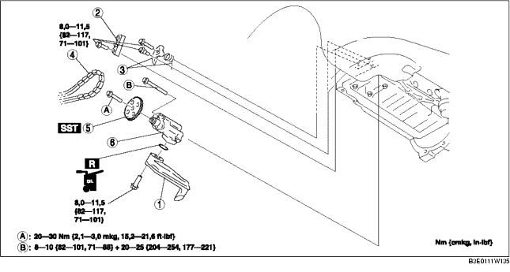

1. Die Batterieabdeckung ausbauen. (Siehe BATTERIE AUSBAUEN/EINBAUEN [LF].)
2. Das Massekabel der Batterie abklemmen.
3. Unterboden und Spritzschutz als komplette Einheit ausbauen.
4. Das Vorderrad (rechts) abmontieren.
5. Das Motoröl ablassen. (Siehe ÖLWECHSEL [LF].)
6. Den Stopfen entfernen. (Siehe ABDECKPLATTE AUSBAUEN/EINBAUEN [LF].)
7. Den Keilriemen ausbauen. (Siehe KEILRIEMEN AUSTAUSCHEN [LF].)
8. Kühlmittelausgleichsbehälter so positionieren, dass er nicht im Wege steht.
9. Den A/C-Kompressor mit angeschlossenen Leitungen abmontieren. (Siehe A/C-KOMPRESSOR AUSBAUEN/EINBAUEN [LF].)
10. Die Zündspule ausbauen. (Siehe ZÜNDSPULE AUSBAUEN/EINBAUEN [LF].)
11. Die Zündkerze herausdrehen. (Siehe ZÜNDKERZEN AUSBAUEN/EINBAUEN [LF].)
12. Die Gaszughalterung zur Seite schieben.
13. Kurbelwinkelgeber (CKP) entfernen. (Siehe KURBELWINKELGEBER (CKP) AUSBAUEN/EINBAUEN [LF].)
14. Die vordere Motorabdeckung entfernen. (Siehe STEUERKETTE AUSBAUEN/EINBAUEN [LF].)
15. Die Ölwanne ausbauen. (Siehe ÖLWANNE AUSBAUEN/EINBAUEN [LF].)
16. Gemäß der Reihenfolge in der Tabelle ausbauen.
17. Der Einbau erfolgt in umgekehrter Reihenfolge.
18. Die vorgeschriebene Ölsorte und -menge einfüllen. (Siehe ÖLWECHSEL [LF].)
19. Den Motor anlassen und auf Leckstellen prüfen.
20. Den Motorölstand prüfen. (Siehe MOTORÖLSTAND PRÜFEN [LF].)
21. Zündverstellung und Leerlaufdrehzahl prüfen. (Siehe MOTOREINSTELLUNGEN [LF].)

.
|
1
|
Ölsieb
|
|
2
|
Ölpumpen-Kettenschiene
|
|
3
|
Ölpumpen-Kettenspannerfeder und Feder
|
|
4
|
Ölpumpenkette
|
|
5
|
Ölpumpenrad
|
|
6
|
Ölpumpe
(Siehe Einbauhinweis für Ölpumpe.)
|
1. Das SST am Ölpumpenrad fixieren, damit sich die Ölpumpe nicht dreht.
1. Die Schrauben in der in der Abbildung gezeigten Reihenfolge in zwei Schritten festziehen.